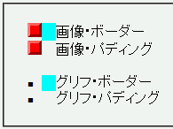
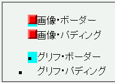
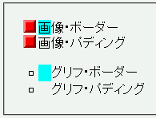

〔Opera6〕画像リストマーカーを使用しているとき、要素の内容物が左ボーダーや左パディングの領域を無視してリストマーカーの直後に置かれる。内容物は左ボーダーや左パディングに重なる。
〔Opera7〕リストマーカーの配置ルールが統一されていない。画像リストマーカーはパディング領域に進入するがグリフや番号のリストマーカーはパディング領域には進入しない。
<ul style="list-style-image:url('img02.png');">
<li style="border-left:1em solid aqua;">画像・ボーダー</li>
<li style="padding-left:1em;">画像・パディング</li>
</ul>
<ul style="list-style-type:square;">
<li style="border-left:1em solid aqua;">グリフ・ボーダー</li>
<li style="padding-left:1em;">グリフ・パディング</li>
</ul>
ボックス左側にボーダーやパディングを設置した場合にリストマーカーがどのように置かれるかを示しています。
WinIE6.0での表示（標準モード）
Opera7.11での表示（標準モード）
Opera6.06での表示
CSS2では list-style-position: outside; について「リストマーカーを主要ブロックボックスの外側に置く」と定める一方、「下位互換性のために正確な位置は定めない」とも決められています。従って、マーカーをボーダー領域の外側に置くWinIEやMozillaの実装も、内容領域の外側に置くOpera7の実装もCSS2の規定上は問題ないと考えられます。
Opera6.06、Opera7.11標準モード、Opera7.11互換モードで不具合の発生を確認しました。